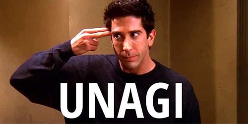

Best Episodes
The One with the Jellyfish
A tranquil beach weekend turns tumultuous when Monica falls victim to a jellyfish sting and Ross resolves to end his new relationship to reunite with Rachel. However, Ross's lengthy 18-page letter (yes, front and back!) resurfaces lingering emotions, leading to a rollercoaster few days for the rekindled duo, culminating in yet another heated argument. Can anyone say, "Were we on a break?"
The One with Unagi
In this episode, Ross attempts to explain self-defense, "kara-TE," and "unagi" to Rachel and Phoebe, confidently asserting, "Only through genuine unagi can you anticipate any potential danger." However, they soon turn the tables on him, offering a lesson in humility and giving Ross a taste of his own medicine.
The One with All the Cheesecakes
A mistaken cheesecake delivery sends Chandler and Rachel tumbling down a path of dessert theft, culminating in them indulging in remnants from a dish found on the hallway floor. Meanwhile, the episode warmly welcomes back Phoebe's former flame, scientist David, in one of the series' most charming guest appearances.